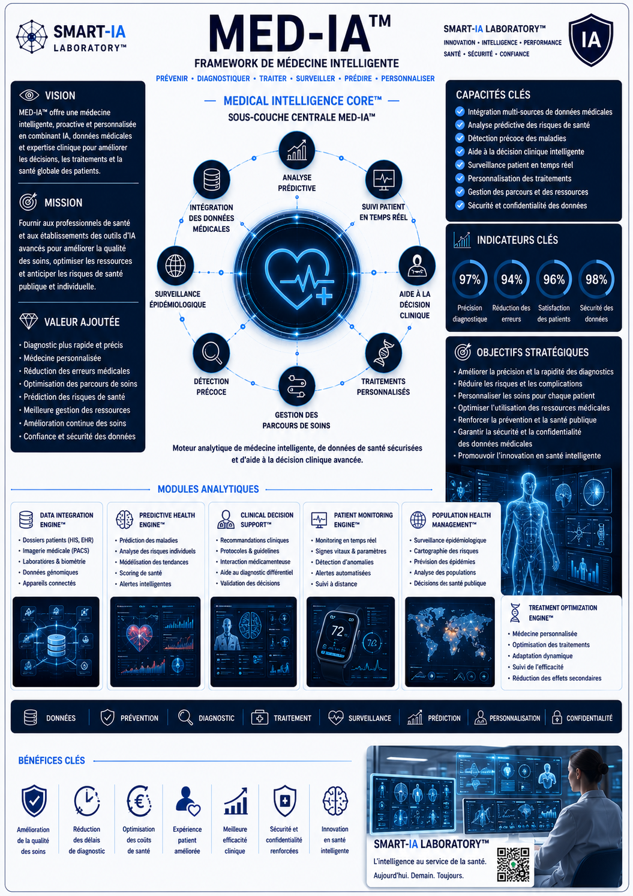

DATA INTEGRATION ENGINE™
Module dédié à l’intégration des dossiers patients, données biologiques, imagerie médicale et signaux connectés.
Advanced Strategic Artificial Intelligence Research
___
Une architecture de frameworks IA conçue pour transformer
les données complexes en décisions exploitables.
MED-IA™ transforme les données médicales, les parcours patients et les signaux cliniques en plateforme intelligente d’analyse, de prévention et d’aide à la décision.
En combinant dossiers patients, imagerie médicale, données biologiques, objets connectés, surveillance temps réel et intelligence artificielle analytique, MED-IA™ permet une lecture avancée des risques, diagnostics et trajectoires de soin.
Le framework est conçu pour les environnements de santé, la médecine préventive, la supervision clinique, l’optimisation des parcours de soins et l’analyse sécurisée des données médicales.
Une synthèse visuelle du framework MED-IA™, de sa sous-couche Medical Intelligence Core™, de ses modules cliniques et de ses objectifs stratégiques santé.

MEDICAL INTELLIGENCE CORE™ constitue le moteur analytique de lecture clinique, de prédiction médicale et de supervision intelligente des données de santé.
Module dédié à l’intégration des dossiers patients, données biologiques, imagerie médicale et signaux connectés.
Module d’analyse prédictive permettant d’anticiper les risques, complications et signaux faibles de santé.
Module d’aide à la décision clinique, orienté recommandations, protocoles et priorisation médicale.
Une synthèse visuelle du framework MED-IA™, de sa sous-couche Medical Intelligence Core™, de ses modules d’analyse clinique et de ses objectifs stratégiques.

MEDICAL INTELLIGENCE CORE™
Santé • Diagnostic • Prévention • Données médicales • Décision clinique • Sécurité